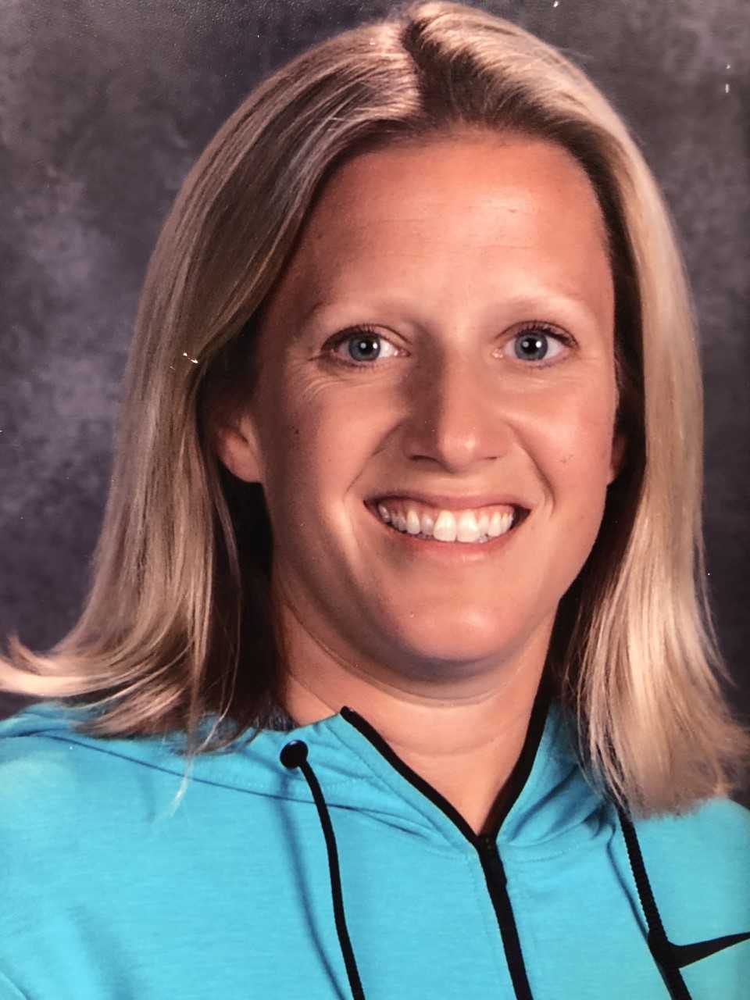

Coaches
Head Varsity Coach: Lynnette Landis
This is the first season for Lynnette Landis as the varsity head coach for Summit high school.

- Coach Landis is a graduate from Redmond high school where she was a 4 year varsity player.
- She played college ball for Northwest University in Kirkland,WA.
- She began her coaching career at NU as an assistant coach.
- Coach Landis was the owner and founder of Top Level Hoops where she was a personal trainer and coach for athletes from grade school through college age.
- Landis has coached several AAU varsity teams, as well been a high school varsity assistant coach.
Coach Landis has been married to her husband Mark for 30 years and has two daughters, Nicole and Kelsey.
JV Head Coach: Stephanie Barker
Coach Barker is in her 3rd year as coach of the Summit JV team.

- Barker was a Magna Cum Laude Graduate of NNU in 2001 and majored in Kinesiology Education.
- As a player at NNU she was named the Female Athlete of the Year in 2001.
- Barker continued her basketball career as the Assistant Women's Basketball Coach at NNU from 2002-2007.
- Coach Barker has been the Summit JV Girls Basketball Coach from 2015 - Present.
Coach Stephanie Barker is the wife of Ryan Barker and Mom to Ellie, age 10, Rylee, age 7.
JV-2 Head Coach: Mike Carpenter
This is the 28th year of coaching high school athletics for Coach Carpenter.

- Coach Carpenter began coaching basketball and softball at Forest Grove High School.
- He moved to Central Oregon and began coaching volleyball at Mountain View High School.
- When Summit opened its doors in 2001, Mike became the varsity softball coach.
- Mike begins his 8th year coaching in the Summit girls basketball program.
Mike is married to Niki and has three daughters, Sara, Mikayla, and Camryn.
Assistant Varsity Coach: Sherri Murrell
Coach Murrell is in her first year as assistant coach of the varsity team.

- Coach Sherri Murrell is a 25 year veteran as a head/assistant coach at the D1 college basketball level.
- In her 21 seasons as a head coach, Murrell guided her teams to the NCAA national tournament, WNIT national tournament, and a Big Sky conference and tournament championship.
- In 21 seasons as a head coach-Murrell coached at George Fox University, Pacific (CA), Washington State and Portland State.
- Coach Murrell is the founder of Next Level Hoops here in Central Oregon in which she conducts personal training for players, helping them develop the necessary tools to be successful on and off the court.
Coach Sherri Murrell lives in Bend and has two children, twins Rylan and Halle.